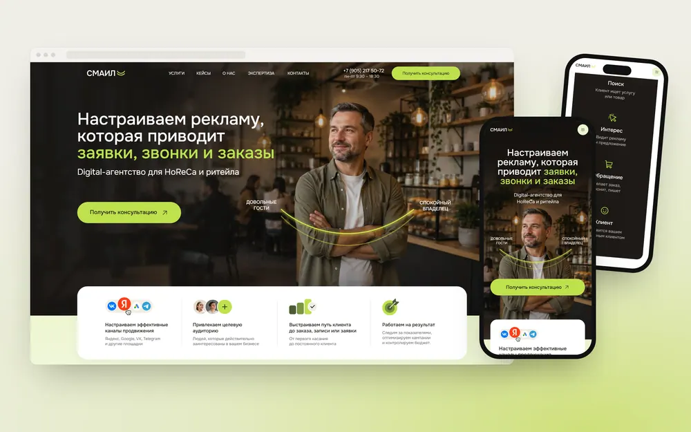
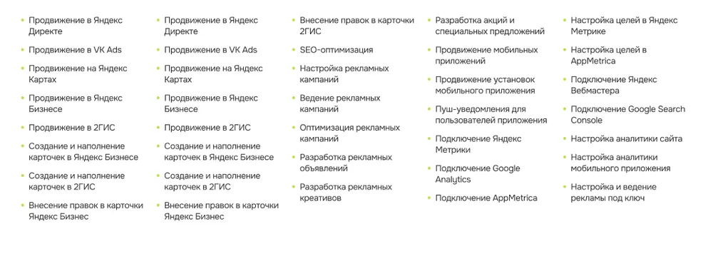
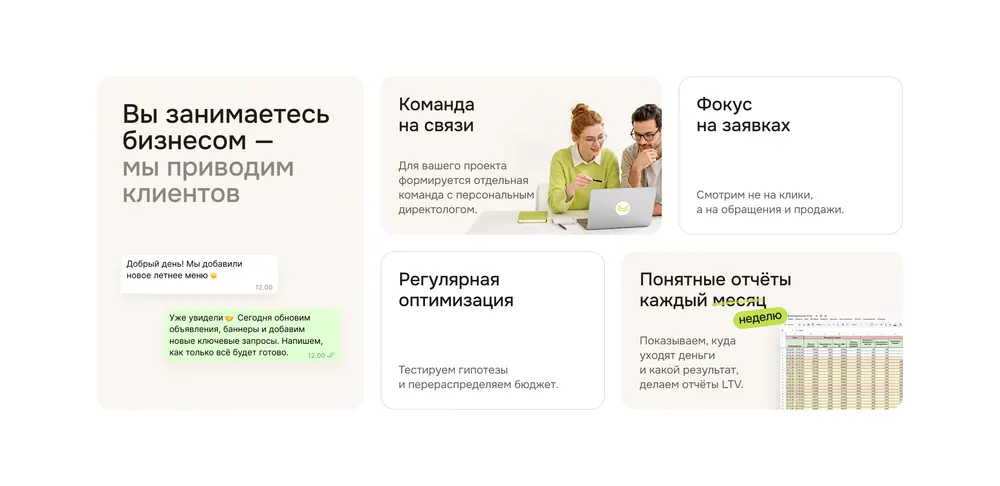
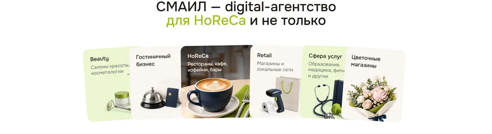
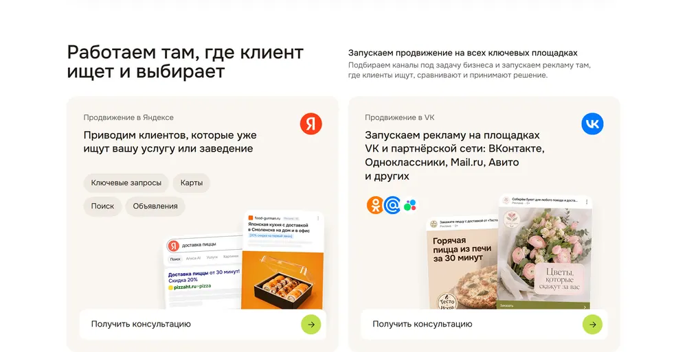

СМАИЛ
Одностраничный сайт нового бренда digital-агентства: он отделяет отдел рекламы от материнской компании и продаёт рекламу владельцу бизнеса.

Контекст
Отделу интернет-рекламы понадобились собственное имя и сайт.
Отдел внутри компании настраивал рекламу в Яндексе и VK, но только под брендом компании и только для её клиентов. Чтобы брать заказы со стороны — у салонов красоты, ритейла, цветочных магазинов, — нужен был отдельный бренд.
СМАИЛ — digital-агентство для HoReCa и ритейла: контекстная и таргетированная реклама, продвижение на картах, аналитика, SEO и рекламные материалы. Название и концепцию придумала маркетолог; старая страница осталась для клиентов компании.
Задача
Показать, что агентство самостоятельное и работает не только с общепитом.
- Объяснить, как реклама превращается в заявки, звонки и заказы.
- Вести посетителя к заявке на консультацию.
- Исходные условия: название, концепция «улыбки», тексты и перечень услуг — от маркетолога, логотип сгенерирован в ChatGPT.
Метафора одним жестом
Дуга из знака логотипа соединяет «довольных гостей» и «спокойного владельца».
Концепция маркетолога: агентство соединяет гостей и владельцев, и улыбаются все. Моя задача была сделать так, чтобы игривая идея не обесценивала серьёзный продукт — ведь агентство отвечает за рекламный бюджет клиента. Поэтому улыбка появляется на первом экране один раз, одним жестом.

Проблема → решение
Разгрузить композицию, чтобы проблема и решение читались сразу.
Маркетолог передала сгенерированный вариант блока: персонаж, дашборды с цифрами и плашки в одной сцене. Больше всего времени ушло на поиск композиции без лишнего шума. В итоге — две колонки: проблема на красном фоне, решение на зелёном, фото в общем стиле сайта.


Услуги: из списка в 6 групп
Владельцу бизнеса не нужно разбираться в терминах вроде «РСЯ» или «ретаргетинг».
Перечень услуг пришёл сплошным списком из ~40 пунктов: его тяжело читать, и непонятно, что из этого нужно именно тебе. Я сгруппировала услуги в 6 категорий с иконками и кнопкой «Подробнее», а заголовки строила как ответ на вопрос «что мы делаем для клиента». По заголовку сразу понятно, какую задачу закроет агентство, детали — в списке под ним.



Единый арт-дирекшн
Все изображения людей я сгенерировала по общим правилам.
- Тёплый свет, интерьеры заведений и рабочие сцены.
- Цвета одежды героев — под палитру сайта: оливковый и лаймовый, чтобы фото не выглядели чужеродно.
- Одной зелёной палитры оказалось мало, поэтому в генерации добавили глубокий синий.


Сайт целиком
Путь от первого экрана до заявки.
Почти все блоки собраны в Zero Block и адаптированы под разные экраны.





Результат
У отдела появилось собственное имя и сайт, с которым можно идти к новым клиентам.
Сайт запущен на smile-digital.ru. Реклама на сайт пока не запущена, поэтому данных о заявках и конверсии ещё нет.

Обсудим ваш проект?
Опишите задачу в паре предложений — задам уточняющие вопросы и назову сроки и стоимость.